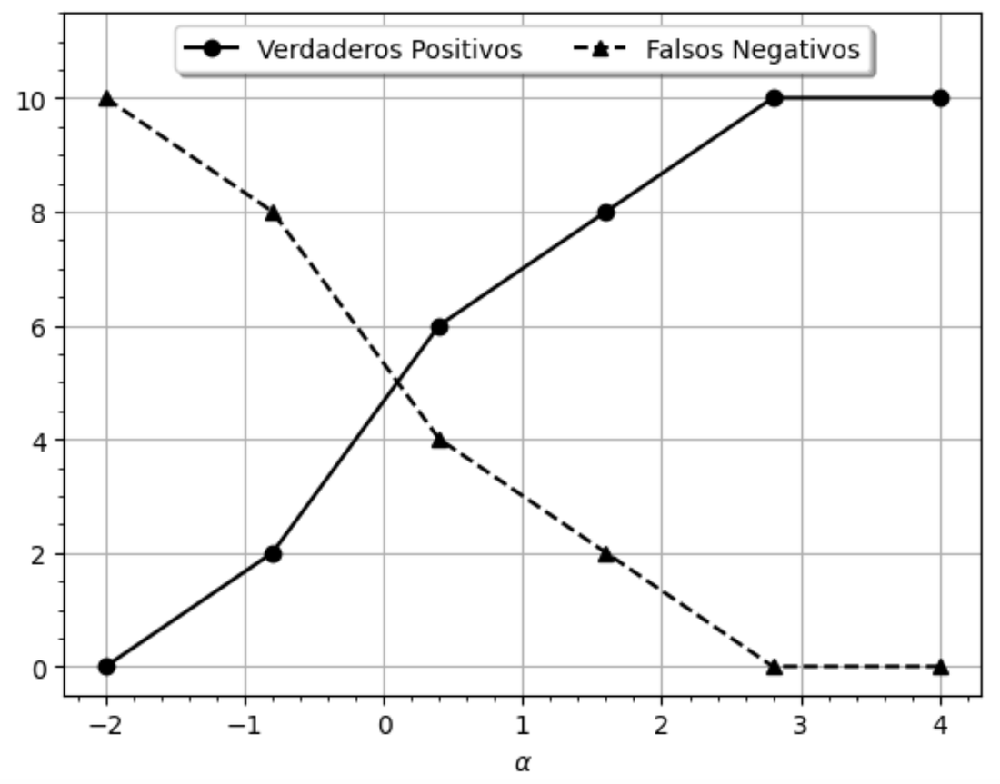
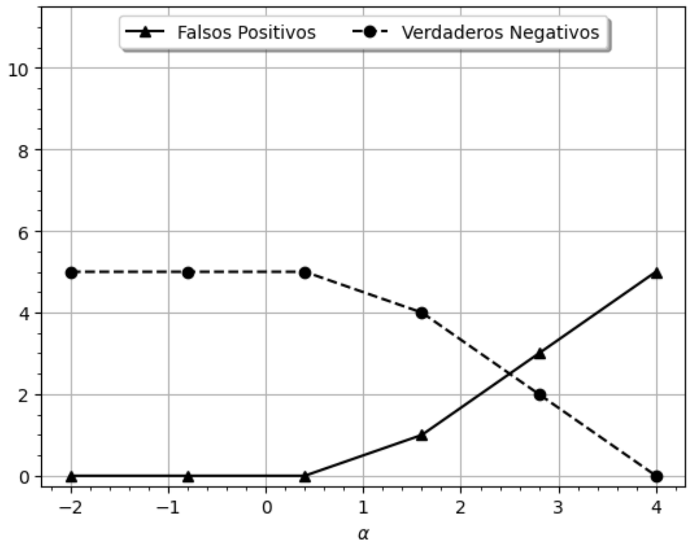
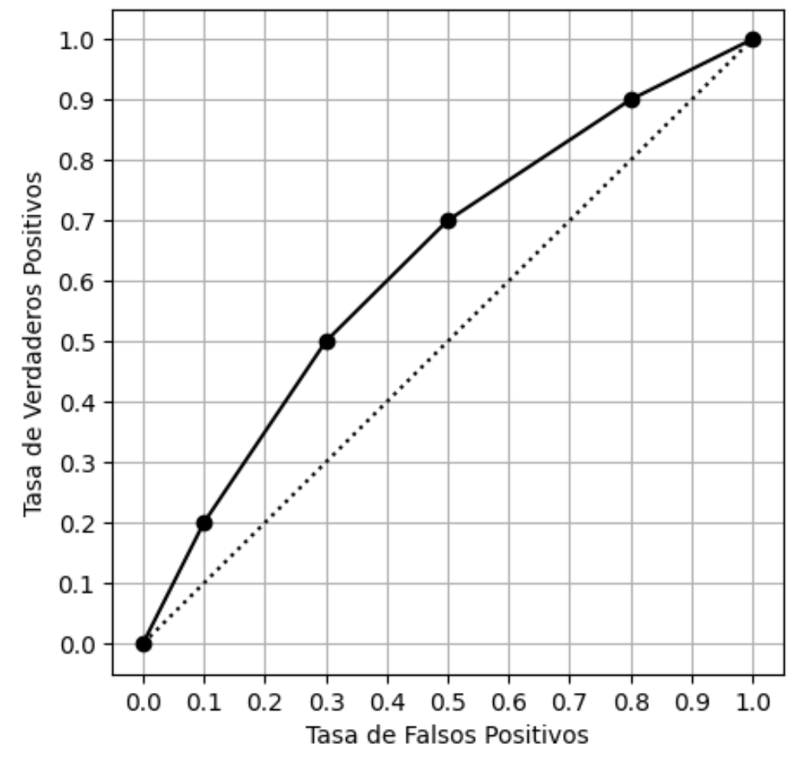
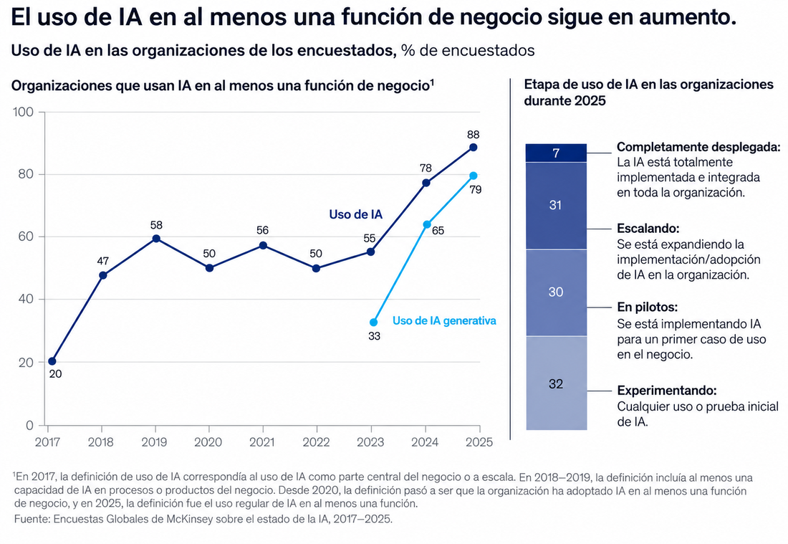
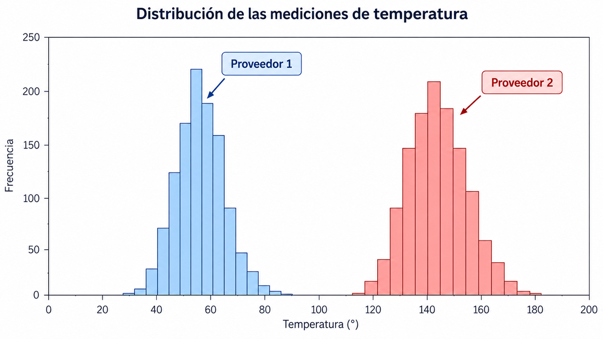

Certamen 3 · Clasificación, regresión e IA
Examen de Fundamentos en Ciencia de Datos 2026 · 6 puntos · 3 preguntas
El enunciado se lee aquí. Cada pregunta indica la clase donde se vio la idea. La resolución está cerrada: ábrela después de intentar.
Al terminar esta hoja nombras, en cada pregunta, la distinción que la decide, antes de abrir la respuesta.
- Evidencia de aprendizaje: Resuelve las tres preguntas y acierta la distinción de cada una.
- Actividad final: La P3 completa, en papel.
- Criterio de dominio: Nombra las tres distinciones sin mirar la respuesta y resuelve cada pregunta con justificación.
Pregunta 1 · Curva ROC (2 puntos)
En clase: Clase 12 · la matriz · Clase 13 · el denominador de cada tasa · Clase 14 · el umbral recorre la curva.
Considere un modelo de clasificación binaria llamado «Modelo 1». Al mover un parámetro de sensibilidad α, el número de verdaderos positivos, falsos negativos, falsos positivos y verdaderos negativos cambia según estas figuras.


Se desea comparar el Modelo 1 con el modelo de la curva siguiente. En el examen hay que dibujar la ROC del Modelo 1 sobre esa figura.

a) Dibuje la curva ROC del Modelo 1 (0,5)
En clase, cada umbral es un punto (FPR, TPR) y el modelo es la curva: Clase 14 · simulador.
De las dos primeras figuras se lee esta tabla. Los conteos son del gráfico; TPR y FPR se calculan.
| α | VP | FN | FP | VN | TPR = VP/(VP+FN) | FPR = FP/(FP+VN) |
|---|---|---|---|---|---|---|
| −2 | 0 | 10 | 0 | 5 | 0 | 0 |
| −1 | 2 | 8 | 0 | 5 | 0,2 | 0 |
| 0 | 4 | 6 | 0 | 5 | 0,4 | 0 |
| 1 | 6 | 4 | 1 | 4 | 0,6 | 0,2 |
| 2 | 8 | 2 | 2 | 3 | 0,8 | 0,4 |
| 3 | 10 | 0 | 3 | 2 | 1 | 0,6 |
| 4 | 10 | 0 | 5 | 0 | 1 | 1 |
El punto de la curva es (FPR, TPR): FPR en el eje horizontal, TPR en el vertical. En α = 2 el punto es (0,4; 0,8), no (0,4; 1).
Respuesta correcta y cómo se resuelve
Respuesta. La curva del Modelo 1 une, en orden de α, los puntos (0; 0), (0; 0,2), (0; 0,4), (0,2; 0,6), (0,4; 0,8), (0,6; 1) y (1; 1).
- Lee VP y FN en la primera figura y FP y VN en la segunda. Comprueba que VP+FN = 10 y FP+VN = 5 en cada α.
- TPR = VP/10. FPR = FP/5. Ejemplo en α = 2: TPR = 8/10 = 0,8 y FPR = 2/5 = 0,4.
- Grafica (FPR, TPR) y une los puntos en el orden en que crece α, no en el orden de los conteos crudos.
- El área bajo la curva del Modelo 1, por trapecios, es 0,10 + 0,14 + 0,18 + 0,40 = 0,82. Ese 0,82 no viene impreso: es el cálculo. El tramo vertical en FPR = 0 no suma área.
AUC (Área Bajo la Curva) = suma de trapecios entre puntos ROC. Representa la probabilidad de que el modelo rankee un caso positivo más alto que uno negativo.
- AUC = 0,5 → Clasificador aleatorio (curva en la diagonal)
- AUC = 1,0 → Clasificador perfecto (curva en la esquina superior izquierda)
- AUC = 0,82 → Discriminación buena; supera ampliamente la referencia 0,5
Error típico. Poner α = 2 en TPR = 1, o decir que el FPR «empieza en 1 y baja». En la tabla el FPR sale de 0 y sube: 0, 0, 0, 0,2, 0,4, 0,6, 1.
Conteos: figuras del enunciado. Tasas y área: calculadas.
b) ¿Qué modelo es mejor? (0,5)
En clase, una curva que queda por encima de otra domina; si se cruzan, depende del umbral: Clase 14 · punto de operación y modelo · el área.
Compare el Modelo 1 con la curva ya impresa. ¿Cuál es mejor, y por qué?
Respuesta correcta y cómo se resuelve
Respuesta. Es mejor el Modelo 1. Su curva queda por encima de la de referencia: para un mismo FPR obtiene más TPR, y llega a TPR = 1 con FPR = 0,6. La curva impresa sigue cerca de la diagonal.
- La diagonal es un clasificador que no separa mejor que el azar.
- Los puntos de la curva impresa, leídos a ojo, están cerca de (0; 0), (0,1; 0,2), (0,3; 0,5), (0,5; 0,7), (0,8; 0,9) y (1; 1). Esa lectura es aproximada: el PDF no da la tabla.
- El área aproximada de esa curva, también por trapecios, queda cerca de 0,63. La del Modelo 1 es 0,82. Como los puntos de referencia son aproximados, el 0,63 no se reporta como cifra del examen; sí alcanza para ver que está más cerca de la diagonal.
- Aun así, el umbral que se usa en la práctica depende de cuánto cuesta un falso positivo frente a un falso negativo. «Mejor curva» no elige solo el α.
Error típico. Declarar mejor el modelo de la figura impresa porque «ya viene dibujado», sin comparar las dos curvas.
c) Umbral para detectar a todos los enfermos (0,5)
En clase, el umbral se elige por el error que quieres evitar. Detectar a todos los enfermos es TPR = 1: Clase 14 · simulador.
El modelo predice si un paciente tiene una enfermedad (enfermo = positivo). El médico recibe 1.000 pacientes al mes. Dentro de ellos, 200 tienen la enfermedad. Si quiere que todos los enfermos sean detectados, ¿cuál es el mejor α? Justifique.
Respuesta correcta y cómo se resuelve
Respuesta. α = 3.
- Detectar a todos los enfermos es TPR = 1, es decir FN = 0.
- En la tabla eso ocurre en α = 3 (VP = 10, FN = 0) y en α = 4 (igual). En α = 2 todavía hay FN = 2, así que TPR = 0,8.
- Entre los α que ya logran TPR = 1, el mejor es el de menor FPR: α = 3 tiene FP = 3 y α = 4 tiene FP = 5.
Error típico. Elegir α = 2 porque «ya va alto», o α = 4 porque es el más grande.
d) Falsos positivos al mes (0,5)
En clase, la tasa se multiplica por las personas de ese grupo: Clase 14 · de la tasa a personas.
Con el umbral de la pregunta anterior, ¿cuántos pacientes al mes quedarían marcados como enfermos sin tener la enfermedad?
Respuesta correcta y cómo se resuelve
Respuesta. 480 pacientes.
- Esos pacientes son los falsos positivos. En la muestra del gráfico hay 5 personas no enfermas (FP + VN = 5). La tasa no depende del tamaño: FPR(α = 3) = 3/5 = 0,6.
- Al mes hay 1.000 − 200 = 800 personas sin la enfermedad.
- Falsos positivos = 0,6 × 800 = 480. Se multiplica la tasa por los sanos, no por los 1.000 ni por los 200.
Error típico. Hacer 0,4 × 800 = 320 usando el FPR de α = 2, que no detecta a todos los enfermos.
Pregunta 2 · Regresión polinomial (2 puntos)
En clase: Clase 5 · el polinomio y el grado 10 · Clase 10 · la brecha entre entrenamiento y prueba · Clase 6 · el residuo y el costo al cuadrado.
Se quiere predecir el consumo eléctrico diario de un edificio (kWh) a partir de la temperatura media exterior (°C). Se ajustan polinomios de distinto grado en un conjunto de entrenamiento y se evalúan en un conjunto de prueba.
| Grado | RMSE entrenamiento (kWh) | RMSE prueba (kWh) | Media del error en prueba (kWh) | Desv. estándar del error (kWh) |
|---|---|---|---|---|
| 1 | 58 | 62 | 20 | 59 |
| 2 | 39 | 43 | 8 | 42 |
| 3 | 27 | 30 | 3 | 30 |
| 5 | 18 | 34 | 2 | 34 |
| 10 | 6 | 79 | −5 | 79 |
El error se define como e = y − ŷ. y es el consumo real y ŷ la predicción.
a) ¿Usar el grado 10? (0,5)
En clase, el grado 10 oscila para pasar por el entrenamiento: Clase 5. La decisión se toma con la brecha: Clase 10.
Un analista propone el grado 10 porque tiene el menor RMSE de entrenamiento. ¿Está de acuerdo? Justifique.
Respuesta correcta y cómo se resuelve
Respuesta. No.
- El RMSE de entrenamiento 6 es el menor de la tabla, pero el de prueba es 79, el mayor.
- La brecha 79 − 6 = 73 dice que el polinomio ajustó el entrenamiento y se desarma en datos nuevos.
- El grado para predecir se mira en la prueba, no en el entrenamiento.
Error típico. Elegir el modelo que «aprendió mejor los datos de entrenamiento».
b) ¿Qué grado para días nuevos? (0,5)
En clase, para datos que no entraron al ajuste manda el error de prueba: Clase 10 · la brecha.
¿Qué grado (1, 2, 3, 5 o 10) usaría para predecir días que no entraron al entrenamiento? Justifique con las métricas de la tabla.
Respuesta correcta y cómo se resuelve
Respuesta. El grado 3.
- Para datos no usados en el ajuste, la columna decisiva es el RMSE de prueba: 62, 43, 30, 34 y 79. El menor es 30, el grado 3.
- El grado 5 ya empeora la prueba (34) mientras sigue bajando el entrenamiento (18). Ahí empieza el sobreajuste. El grado 10 lo confirma.
- La tabla no prueba que el grado 3 vaya a servir en cualquier edificio o cualquier año. Solo dice que, entre estos cinco, es el que menos se equivoca en esta prueba.
Error típico. Elegir el grado 5 o 10 por la media del error más cercana a cero, ignorando el RMSE de prueba.
c) Media, desviación estándar y RMSE (1)
En clase, el error con signo es el residuo e = y − ŷ, y el cuadrado castiga los errores grandes. El RMSE del examen es la raíz de ese costo: Clase 6 · función de costo.
Para el modelo elegido en (b), interprete en este problema la media del error, la desviación estándar del error y el RMSE, todos medidos en la prueba.
Respuesta correcta y cómo se resuelve
Respuesta. En el grado 3 la prueba tiene media 3 kWh, desviación estándar 30 kWh y RMSE 30 kWh. Dicen cosas distintas.
- Media del error. e = y − ŷ = 3 kWh. En promedio el consumo real supera a la predicción en 3 kWh: el modelo subestima. En el grado 10 la media es −5: ahí el modelo sobreestima. El signo solo se lee con la definición del examen. No es el promedio de (predicción − real).
- Desviación estándar del error, 30 kWh. Mide cuánto se dispersan los errores alrededor de esa media. Es mucho mayor que 3: los errores no son todos de 3 kWh.
- RMSE, 30 kWh. Es la raíz del promedio de los errores al cuadrado. El cuadrado pesa más los errores grandes, así que no es «el error que ocurre con más frecuencia». Aquí coincide en número con la desviación porque la media es pequeña: √(3² + 30²) = √909 ≈ 30,1.
Error típico. Invertir el signo y decir que una media positiva es sobreestimación, o llamar al RMSE «el error típico» sin decir que penaliza los errores grandes.
Cifras y definición e = y − ŷ: tabla del enunciado. La raíz √(media² + desviación²) es una relación de esas dos columnas, no una cifra impresa aparte.
Pregunta 3 · Adopción, datos y agentes (2 puntos)
En clase: Clase 3 · la forma del gráfico · Clase 4 · verificar antes de corregir · Clase 18 · LLM · agentes.
Una empresa de mantenimiento de maquinaria industrial evalúa incorporar inteligencia artificial. Tiene años de mediciones (temperatura, presión, vibración y fallas) y quiere asistir a sus técnicos con IA generativa. El equipo directivo mira esta figura.

a) Dos conclusiones sobre la adopción (0,5)
La figura es del examen. El criterio para leerla está en clase: dos paneles no son el mismo número, y la nota de la figura cambia la definición. Clase 3 · el resumen no determina la forma · integridad visual.
A partir de la figura, describa dos conclusiones sobre la evolución y el grado de adopción. ¿Por qué un alto porcentaje de organizaciones que utiliza IA no implica que esté completamente integrada en sus procesos?
Respuesta correcta y cómo se resuelve
Respuesta. El uso informado sube de 20 % en 2017 a 88 % en 2025, pero la serie no es una subida pareja (47, 58, 50, 56, 50, 55, 78, 88) y la definición de «uso» cambió, según la nota de la figura. En 2025, de la barra de etapas, solo 7 % está completamente desplegada; 31 % escala, 30 % está en pilotos y 32 % experimenta. Esas cuatro partes suman 100 y no son lo mismo que el 88 %.
- Primera conclusión, del gráfico de la izquierda: más organizaciones declaran usar IA en al menos una función. No se lee como «crecimiento exponencial»: hay años en que baja, y la nota advierte que la pregunta no fue la misma todos los años.
- Segunda conclusión, de la barra de 2025: «usar IA en al menos una función» incluye pilotos y experimentos. Completamente desplegada es el 7 %, no el complemento de 88.
- Por eso un porcentaje alto de uso no significa integración: la mayoría de esa barra todavía no tiene la IA implementada en toda la organización.
Error típico. Restar 88 − 7, o llamar al 7 % «usuarios superficiales». El 7 % es la etapa más integrada, no la más superficial.
b) El histograma de temperaturas (0,5)
En clase, el histograma propone una hipótesis: Clase 3. Un desfase se verifica antes de tocarlo: Clase 4.
La empresa junta temperaturas de sensores comprados a distintos proveedores, ya mezcladas en una sola base. El análisis exploratorio da este histograma. ¿Qué problema de calidad podría explicar lo que se ve? ¿Cómo comprobaría la hipótesis y cómo corregiría los datos?

Respuesta correcta y cómo se resuelve
Respuesta. Se ven dos poblaciones separadas, no un solo montón con un valor atípico. Una causa posible de calidad es que los proveedores no midan en la misma escala, calibración o condición. Eso es una hipótesis: la figura la sugiere y no la demuestra.
- Observable: el Proveedor 1 se agrupa cerca de 55 °C y el Proveedor 2 cerca de 140 °C, con un vacío entre ambos. No hay un umbral de falla escrito en el examen.
- Para comprobar: identificar qué filas son de cada proveedor, la unidad, el modelo del sensor, la ubicación, la fecha de calibración y si hubo mantenimiento. Medir los mismos equipos con un instrumento de referencia.
- No se resta la media de cada proveedor como corrección automática. Si se confirma un desfase de calibración, la corrección es la que corresponda a esa causa, y se guardan el valor original, la transformación y el motivo. Si son máquinas distintas en rangos distintos, no hay nada que «corregir»: hay que analizarlas aparte.
Error típico. Declarar que un proveedor está malo y desplazar su histograma hasta que coincida con el otro.
c) Dos límites de usar solo un LLM (0,5)
En clase, un LLM predice la siguiente palabra y no ejecuta por sí mismo: Clase 18 · LLM.
La empresa quiere un modelo de lenguaje para responder consultas de los técnicos. Mencione dos limitaciones de usar únicamente un LLM e indique qué tipo de modelo visto en clases podría usarse, con su funcionamiento breve.
Respuesta correcta y cómo se resuelve
Respuesta. Un LLM aislado puede inventar un procedimiento con tono seguro, y no consulta los sensores ni los manuales de esta empresa. Lo que sí está hecho para esta tarea es un agente: el mismo tipo de modelo, puesto en un bucle que observa, elige una herramienta y vuelve a mirar el resultado.
- Límite del modelo: completa texto probable. En un manual de mantenimiento eso puede ser un paso o una pieza que no existen.
- Límite de acceso: aunque el texto fuera perfecto, un LLM aislado no lee la temperatura de hoy ni abre el manual de este equipo. Eso no se arregla pidiéndole que «sea más cuidadoso».
- El agente no elimina la primera limitación. Le pone herramientas: leer una medición, buscar en el manual, registrar una orden. El modelo decide el siguiente paso; la herramienta trae el dato o ejecuta la acción.
Error típico. Decir que un agente «no alucina» o que reemplaza al técnico.
d) Por qué esta instrucción es de un agente (0,5)
En clase, el agente es ese modelo dentro de un bucle: elige una herramienta, observa el resultado y eso condiciona el paso siguiente. Clase 18 · agentes.
La empresa quiere que el sistema reciba: «Revisa las mediciones actuales del sensor de temperatura y, si detectas un valor anómalo, consulta el manual del equipo y genera una orden de inspección.» Explique por qué esto le queda mejor a un agente basado en un LLM que a un LLM aislado. Describa una secuencia posible, con el papel del modelo, de los datos del entorno y de las herramientas.
Respuesta correcta y cómo se resuelve
Respuesta. La instrucción exige leer mediciones actuales, aplicar un criterio y, si corresponde, dejar una orden en un sistema. Un LLM aislado solo puede redactar la orden. Un agente puede intentar cumplirla, paso a paso.
- El modelo recibe la instrucción y elige la primera herramienta: leer las mediciones autorizadas de ese sensor.
- El entorno devuelve los valores. El modelo no se los inventa.
- Compara con un criterio que ya está definido: el manual, una regla validada por la empresa o el rango del propio equipo. El examen no entrega un umbral en °C, así que no se usa uno de ejemplo como si fuera del enunciado.
- Si el criterio dice que hay anomalía, busca el manual de ese equipo y redacta la orden. La herramienta la registra solo si el permiso existe. Si no hay anomalía, no crea la orden.
- Una persona sigue siendo quien valida el criterio y quien decide si la orden se ejecuta.
Error típico. Inventar que el sensor marcó 162 °C y que lo normal era 40–120 °C. Esos números no están en el examen. También lo es describir al agente como un LLM que «piensa mejor», sin datos ni herramientas.
- Graficar conteos en vez de (FPR, TPR), o tomar α = 2 como si ya detectara a todos.
- Elegir el grado 10 por el RMSE de entrenamiento.
- Leer la media del error al revés de e = y − ŷ.
- Tomar «usa IA» como «IA desplegada en toda la organización».
- Corregir el histograma restando medias, o inventar un umbral de temperatura.
Cierre de la Clase 23 · Distinciones del Certamen 3
Qué aprendiste
- ROC-AUC es la herramienta para comparar dos modelos en clasificación desbalanceada.
- Un LLM redacta; un agente redacta Y ejecuta: la diferencia es el ciclo percibe-actúa-mide.
Qué no debes confundir
- Comparar dos modelos por un punto de operación ≠ comparar la curva ROC completa.
- Un LLM que responde preguntas ≠ un agente que resuelve problemas con retroalimentación del mundo real.
Procedimiento para el papel
- Identifica qué se compara: ¿dos modelos? ¿dos umbrales? ¿LLM vs agente?
- Si son modelos: dibuja las dos curvas ROC y compara las áreas (AUC).
- Si es agente: identifica el ciclo: percibe, decide, actúa, mide el resultado real.
Viene de: Clase 21 · Distinciones del Certamen 2 · Sigue: Clase 24 · Triaje: ¿qué tipo de problema es este?
Vuelve a tu activación: Antes de resolver cada pregunta del certamen: ¿qué distinción crees que decide tu respuesta? ¿Cambiarías tu respuesta si cambias esa distinción?
Respuesta correcta y cómo se resuelve
Un LLM genera texto. Un agente genera texto Y ejecuta acciones en un sistema real, midiendo si funcionó. Si el problema requiere cerrar loops en el mundo real, necesitas un agente. [FUENTE · Repo: 07_DATITO/patron_evaluacion.md §2]
El cierre es una síntesis de la clase [DATITO]: cada afirmación tiene su fuente en el cuerpo de este visual. Fuente del cierre: 07_DATITO/clases.yaml.